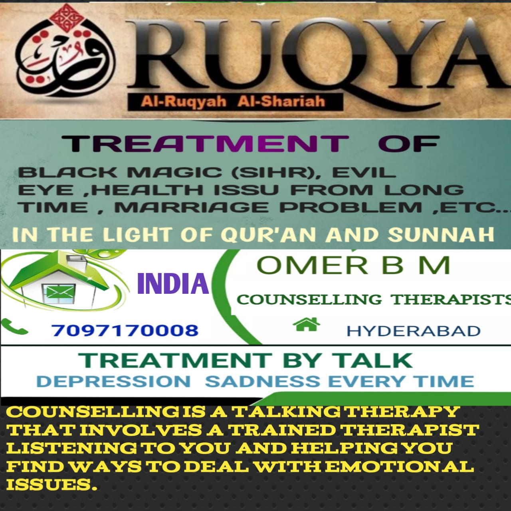

WELCOME TO SERVICES PAGE
THE SERVICES PROVIDED BY OUR RUQYAH SHARIAH AND COUNSELLING CENTER

🕌 Services our Ruqyah Center Offers:
🔹 Personal Ruqyah sessions (men & women separately).
🔹 Home Ruqyah (cleansing and spiritual audit).
🔹 Online Ruqyah consultation.
🔹 Ruqyah audio recordings and daily reminders.
🔹 Qur'an therapy for stress, anxiety, infertility.
🔹 Training workshops to teach Ruqyah Shariah.
Why Choose Us?
✓ 100% Qur’an & Sunnah-based methods
✓ Experienced and qualified practitioners
✓ Separate sessions for men and women
✓ Confidential and professional care
✓ No shirk, talismans, or bid'ah (innovation)
📚 Our Services Include:
✨Ruqyah Sessions:
1)In-person individual sessions.
2)Online audio/video consultation(Zoom, WhatsApp).
3)Emergency sessions for severe cases (ex: suicide, sudden attack).
🏠 Home Ruqyah & Cleansing:
1)Complete recitation for home/business affected by jinn or sihr.
2)Guidance on removing items that invite shayateen.
👨👩👧 Family Ruqyah:
1)Sessions for marriage problems, infertility, children’s nightmares, sibling disputes.
2)Ruqyah-based emotional therapy for trauma, divorce, or abuse victims.
📱 Digital Resources:
1)Ruqyah audio (mp3s) for specific problems (headache, fear, sihr, ayn, etc.).
2)Printable daily adhkar charts.
3)Self-Ruqyah guide with step-by-step help.
4)Online support via WhatsApp for follow-up care.
🧠 What Can Ruqyah Treat?
-
Ruqyah is not limited to possession or black magic—it addresses a broad range of spiritual, emotional, and physical issues, including:
✅ Spiritual Conditions: => Black magic (Sihr)
=> Evil eye (Ayn)
=> Jinn possession
=> Witchcraft or sorcery influence
✅ Emotional and Psychological Issues: => Anxiety or depression without medical cause
=> Suicidal thoughts (waswas)
=> Insomnia or nightmares
=> Sudden mood swings or irrational anger
✅ Physical Symptoms with No Medical Explanation: => Chronic illness or fatigue
=> Sudden weight loss or hair fall
=> Headaches or migraines that resist treatment
=> Unusual skin problems or paralysis
✅ Environmental or Social Effects: => Marital disputes without reason
=> Delayed marriages or infertility
=> Blocked sustenance or career problems
=> Sudden misfortunes or consistent failure
🕯️ Benefits of Ruqyah Shariah
1) Spiritual Cleansing: Clears negative energy and evil influences from the soul and home.
2) Inner Peace: Brings tranquility, emotional balance, and improved sleep.
3) Strengthens Faith: Helps you reconnect with Allah, increasing reliance and tawakkul (trust).
4) Protects Against Future Harm: Acts as a shield when done consistently.
5) Safe and Natural: No side effects; uses only words of Allah and His Messenger ﷺ.
🕋 Prophetic Ruqyah Practices (Sunnah)
The Prophet ﷺ performed and recommended regular Ruqyah through:
@) Reciting Mu'awwidhatayn (Surah Falaq and Naas) before sleep.
@) Blowing into cupped hands and wiping the body.
@) Using Ruqyah water (Qur'an-recited water) to drink or wash with.
@) Olive oil with Ruqyah (for massage or anointing).
@) Reading specific du’as for illness, fear, and protection.
🧭 How to Prepare for a Ruqyah Session:
1) Purify intention and have full trust in Allah alone
2) Make wudu (ablution) before starting.
3) Choose a clean, calm space without distractions or music.
4) Avoid shirk practices, talismans, or black magic visits.
5) Be consistent—repetition and sincerity matter.
🏠 Protecting Your Home with Ruqyah
1) Play Surah Baqarah at least once every 3 days..
2) Recite Ayat al-Kursi before bed and after every prayer.
3) Hang no images/statues; keep your home spiritually clean.
4) Avoid haram music, movies, and arguments—they attract jinn.